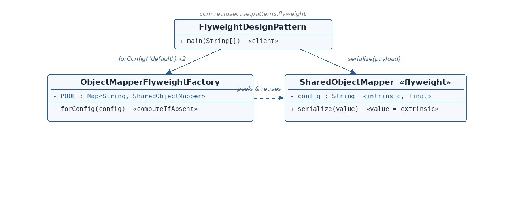

SharedObjectMapper.java — the Flyweight
☕ 4 min read · 🎬 Video walkthrough · 📊 UML diagram · 💻 Runnable code
⚡ In a nutshell — Support large numbers of logical uses of an object efficiently by sharing immutable objects instead of duplicating them.
Support large numbers of logical uses of an object efficiently by sharing immutable objects instead of duplicating them. State is split in two: intrinsic state (shared, stored in the flyweight, immutable) and extrinsic state (context-specific, passed in at each call, never stored).
A factory with a pool guarantees that requests for the same intrinsic state get the same instance back.
A classic Java service bug: new ObjectMapper() per request. Jackson's ObjectMapper is expensive to build and completely reusable per configuration — the standard fix is to pool one mapper per configuration profile ("default", "strict", …) and share it across all requests. This module models exactly that: SharedObjectMapper carries only its immutable config (intrinsic); every request's payload is passed into serialize(value) as a parameter (extrinsic); and ObjectMapperFlyweightFactory pools instances by config key so the thousandth "default" request reuses the very first mapper.
SharedObjectMapper is the Flyweight: its only field is the final intrinsic config. The varying, per-use payload arrives as a method parameter — never stored.ObjectMapperFlyweightFactory is the Flyweight Factory: a private static POOL map keyed by config, with forConfig using computeIfAbsent — construct on first request, return the cached instance ever after. synchronized keeps the pool safe under concurrent access."default" twice and "strict" once — and proves with == that the two "default" requests share one object.
Reading the diagram: the client asks the factory forConfig (possibly thousands of times); the factory pools and reuses flyweights keyed by config. Payloads flow only through serialize(value) — extrinsic state never becomes a field.
SharedObjectMapper — Flyweight — immutable intrinsic config; does real work via serialize(extrinsic).ObjectMapperFlyweightFactory — Factory — the pool; forConfig shares instances by key.FlyweightDesignPattern — Client — proves sharing with ==, then uses shared mappers with different payloads.public class SharedObjectMapper {
private final String config;
public SharedObjectMapper(String config) {
this.config = config;
}
public String getConfig() { return config; }
public String serialize(Object value) {
return "[" + config + "] " + String.valueOf(value);
}
}
private final String config is the intrinsic state — set once, immutable, safe to share across any number of concurrent users. In real Jackson terms: the registered modules and serialization features of one configuration profile.serialize(Object value) takes the extrinsic state as a parameter. The payload varies per call and is never stored on the object — that discipline is what makes sharing safe. Two threads can serialize different payloads through the same instance without interfering.ObjectMapperFlyweightFactory.java — the Factory and poolpublic class ObjectMapperFlyweightFactory {
private static final Map<String, SharedObjectMapper> POOL = new HashMap<>();
private ObjectMapperFlyweightFactory() {}
public static synchronized SharedObjectMapper forConfig(String config) {
return POOL.computeIfAbsent(config, SharedObjectMapper::new);
}
}
POOL is the heart of Flyweight: one map from config key to the single shared instance for that key.computeIfAbsent is the whole sharing policy in one call: first request for "default" constructs the mapper (via the SharedObjectMapper::new method reference); every later request returns the cached one. No new happens anywhere else.synchronized makes concurrent first-requests safe; the private constructor marks the class as a pure static utility.FlyweightDesignPattern.java — the clientSharedObjectMapper defaultMapperFirstRequest = ObjectMapperFlyweightFactory.forConfig("default");
SharedObjectMapper defaultMapperSecondRequest = ObjectMapperFlyweightFactory.forConfig("default");
SharedObjectMapper strictMapper = ObjectMapperFlyweightFactory.forConfig("strict");
System.out.println("default shared: " + (defaultMapperFirstRequest == defaultMapperSecondRequest));
System.out.println("different config new instance: " + (defaultMapperFirstRequest != strictMapper));
System.out.println(defaultMapperFirstRequest.serialize(101));
System.out.println(defaultMapperSecondRequest.serialize("second-payload"));
System.out.println(strictMapper.serialize(101));
"default", one for "strict". The == check proves reference identity — real sharing, not equal copies. The != check proves different configs get different flyweights.serialize calls demonstrate the intrinsic/extrinsic split at work: the same shared "default" instance handles two different payloads back-to-back with no state leaking between calls, and the "strict" instance prefixes the same payload differently.config be final? Shared objects must be immutable — if one caller could mutate the config, every other caller would see it. Immutability is what makes the sharing safe.computeIfAbsent rather than get-check-put? It is atomic per key within the synchronized method and states the pooling intent in one expression: construct only on a genuine miss.$ java -cp target/classes com.realusecase.patterns.FlyweightDesignPattern
default shared: true
different config new instance: true
[default] 101
[default] second-payload
[strict] 101
ObjectMappers per configuration profile (this example — and the standard fix for a common Java performance bug).Integer.valueOf(...) — the JDK's own flyweight cache for small integers; String interning.Store what never changes, pass in what does — and one instance serves them all.
👏 Found this useful? Give it a few claps so more developers discover it, and follow for the whole series — every article ships with a UML diagram, runnable code, a narrated video, and a companion PDF. Happy building! 🚀